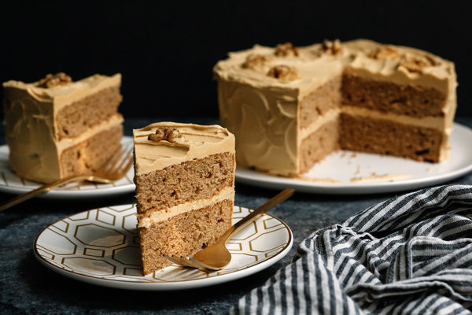

Chocolate Chip Pizza Cookie
spiced apple Breakfast muffins
Baking with a touch of magic!

This is a subtle cake: the coffee tempers the sweetness, and the buttery sweetness keeps it all mellow. Even if you don't make cakes, this one is a cinch. Don't be alarmed if the two sponge layers look thin when you unmold them. They are meant to be, because the cake gains a lot of height with its frosting. This cake is all about old-fashioned, homespun charm, so don't worry about how messy it looks: however the frosting goes on is fine. If you want to fully cover the sides of the cake, make a double batch of the frosting.
Chocolate Chip Pizza Cookie
spiced apple Breakfast muffins
Baking with a touch of magic!